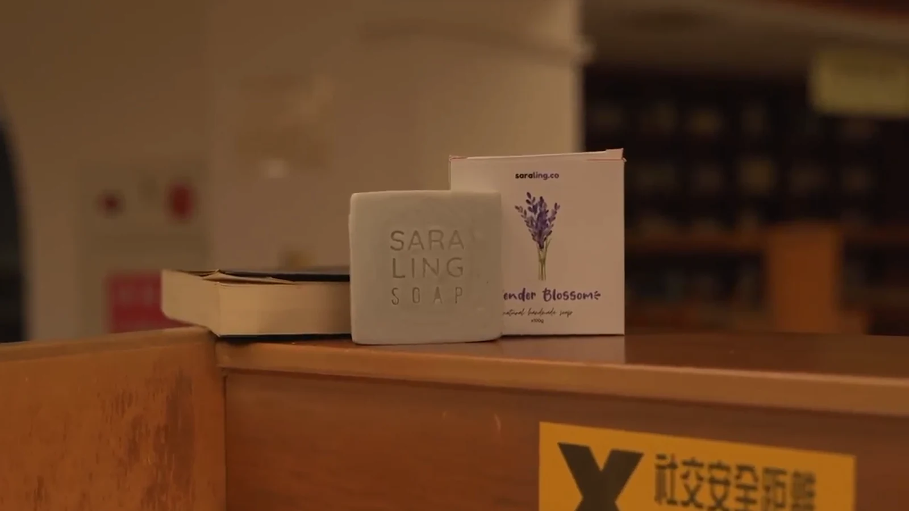
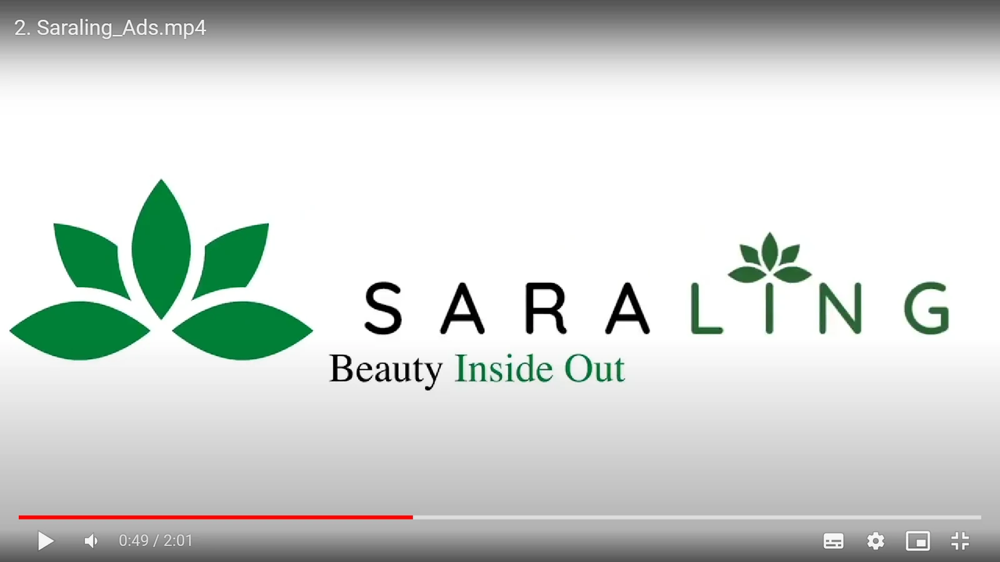
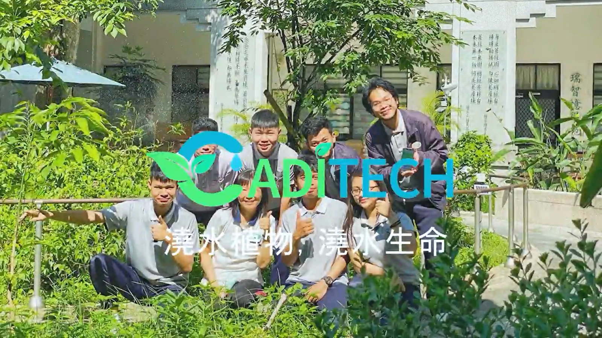
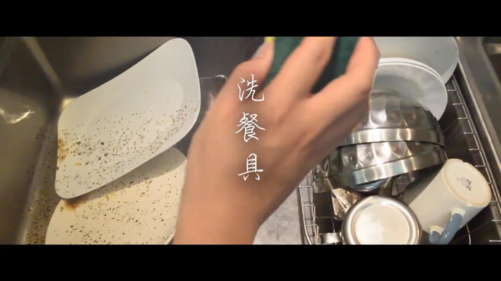
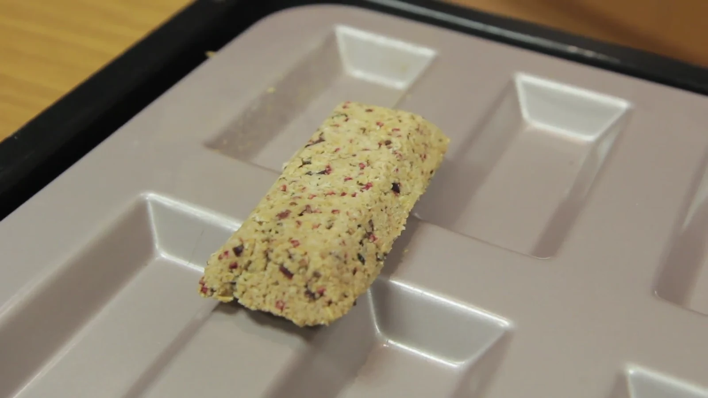
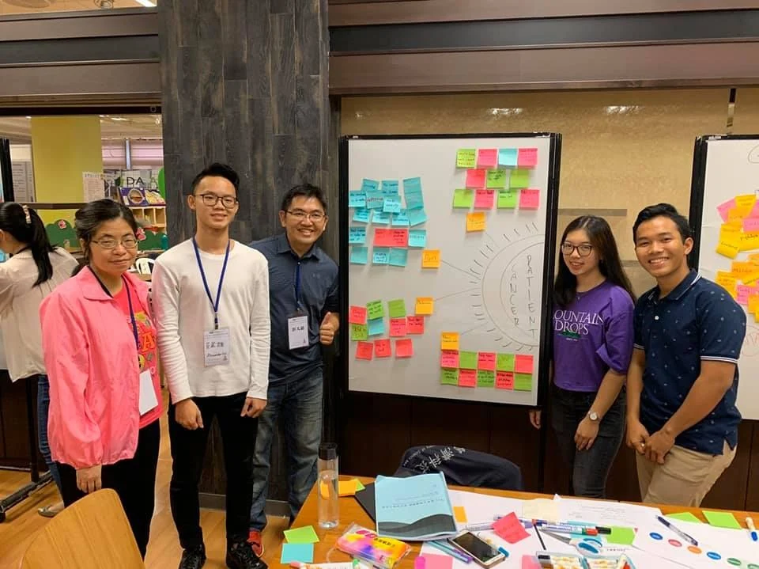
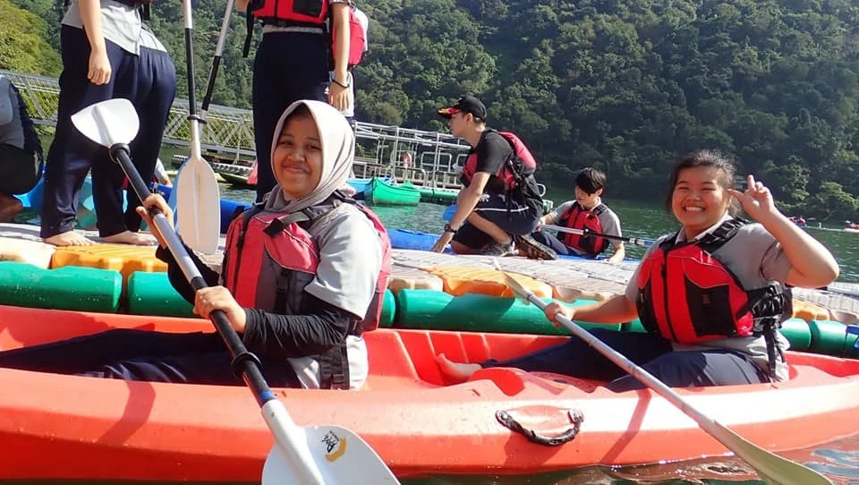
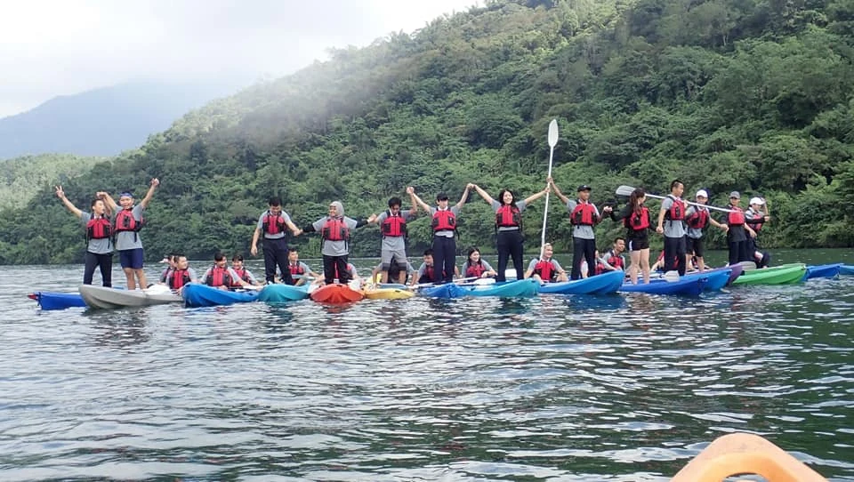
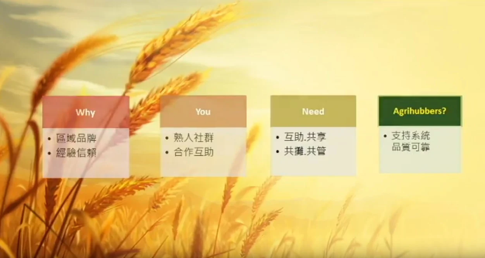
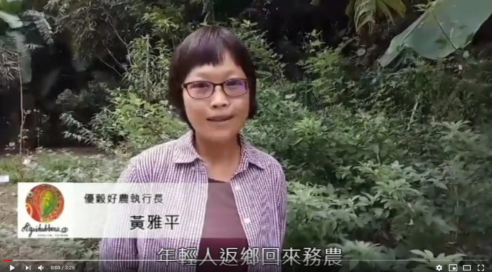

Student Life
Original department materials, presented in their publication language.
Student Life
| Student Projects and Activities | ||
|
|
||
|
印尼班的學生製作了太陽熱能的乾燥機，可以處理生產過剩的農作物。這項技術讓農民存儲更多農作物，又可增加收入。 Some Indonesian students built a dryer that uses solar energy to process surplus crops. This technology will help Indonesian farmers to store and preserve their products and earn extra income.  
印尼班的學生經過老師們的指導，製作了對環境友好的天然香皂。這種香皂對消費者皮膚有很好的保濕效果。 A group of Indonesian students produced an environmentally friendly natural soap under the guidance of thier teacher. This soap deeply moisturizes people's skin.  
學生製作幫助農民澆水的智能應用軟體。這個軟體可以幫助農民省下時間也可以自動澆水。 Some international students from Indonesia designed a smart-sprinkler application. This software helps farmers save time and water plants automatically.  
在老師的監督下，印尼班的學生製造出一瓶多用的清潔劑。這是一個不止對環境友好，還可以用以洗衣服、拖地和洗餐具的清潔劑。 Some Indonesian students at TCUST made a multi-purpose liquid soap under teacher supervision. This soap is environment-friendly and used to do the laundary, mop the floor, and wash the dishes.  
行管系的學生經過老師和業師的指導下製作紅藜的能量棒。它是一個健康零食。 Under the guidance of teachers and practitioners, students of the Department of Marketing and Distribution Management make red quinoa energy bites. This biscuit is a healthy snack.
|
||
|
The teacher thought the students how to make dumplings which is one of the most popular food in Taiwan.
TCUST 30th Anniversary celebration, our students join the party and school fair.
In farm practice class, Our students learn how to process raw material ingredients into high value food products.
By performing roleplay in Chinese, our students learned to improve their speaking skill. On the right-side, they studied Good-Manufacturing-Process (GMP) by making dried-fruit ice cream.
 Our students attended workshop on design-thinking by John Hopkins Carey Business School Professor, Laurie Churchman, MFA to improve their creativity on problem solving.   Our students were having cultural exchange experience to strengthen relationship between the local and international student by enjoying kayaking in Liyu Lake, Hualien.
|
||
|
|
 Why you need agrihubbers(Youtube)  |
 |


|
在老師的監督下，印尼班的學生製造出一瓶多用的清潔劑。這是一個不止對環境友好，還可以用以洗衣服、拖地和洗餐具的清潔劑。 Some Indonesian students at TCUST made a multi-purpose liquid soap under teacher supervision. This soap is environment-friendly and used to do the laundary, mop the floor, and wash the dishes. |